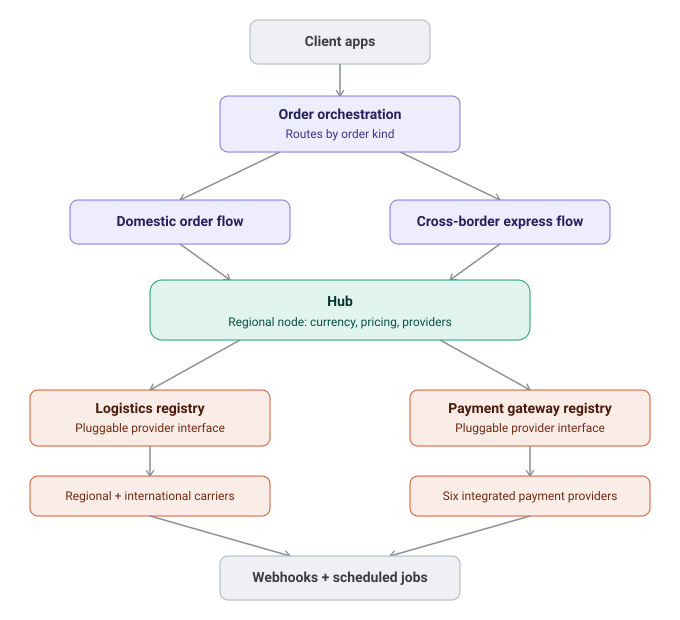
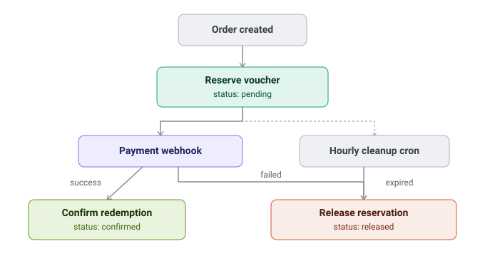
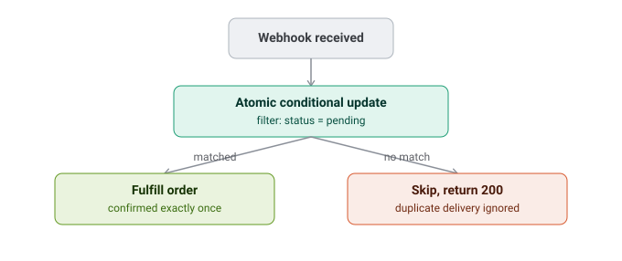

Backend systems work on a NestJS/MongoDB e-commerce and logistics platform serving domestic orders in one market and cross-border express orders into another — with a registry-pattern integration layer for six payment gateways and multiple logistics providers.
The system connects products, currencies, logistics providers, and payment gateways through a network of regional "hubs." Orders are routed as either domestic or cross-border express based on the destination hub's location, and each path resolves independently to a set of pluggable providers rather than hardcoded integrations. My work centered on the backend: order orchestration, the payment and logistics integration layers, and the async workers (webhooks and cron jobs) that keep everything consistent under real-world failure conditions — retried webhooks, abandoned checkouts, and provider outages.
Client requests flow through an order orchestration layer that branches by order kind, resolves to a regional hub, and fans out to two independently pluggable registries — one for logistics providers, one for payment gateways — before settling asynchronously through webhooks and scheduled jobs.

New payment and logistics providers were being added regularly, and hardcoding each one against the order flow made every addition riskier than the last.
Both payments and logistics sit behind a shared interface (a "registry" pattern), so a new provider is an implementation, not a rewrite of the order flow.
Providers that don't cleanly fit the shared interface (a cross-border courier with a different shipment model) are kept deliberately outside the registry rather than forced into a leaky abstraction.
Vouchers were originally redeemed synchronously at order creation, before payment was confirmed — meaning an abandoned or failed checkout still burned the discount. I redesigned it as a reserve-then-confirm-or-release lifecycle, with a scheduled job to reclaim anything left stuck in a pending state.

A voucher was marked fully redeemed the moment an order was created — before payment ever confirmed — so failed or abandoned checkouts still consumed it.
Introduced a reservation state machine: reserve on order creation, confirm on successful payment webhook, release on failure — plus an hourly cron releasing anything abandoned past a 24-hour window.
Adds a cleanup job and an extra state to reason about, in exchange for vouchers never being lost to checkouts that were never completed.
Payment providers retry webhook delivery, and a naive read-then-write handler can process the same successful payment twice. The fix is a single atomic database operation rather than a read followed by a write.

A read-then-write webhook handler has a race window — two retried deliveries can both read "not yet processed" and both act.
Replaced the read-then-write with one atomic conditional update (find a record with status pending, set it to confirmed) — the database itself guarantees only one caller wins.
Requires modeling every webhook-driven transition as a conditional state change up front, rather than free-form logic in the handler — more structure, but it's what makes the guarantee hold.